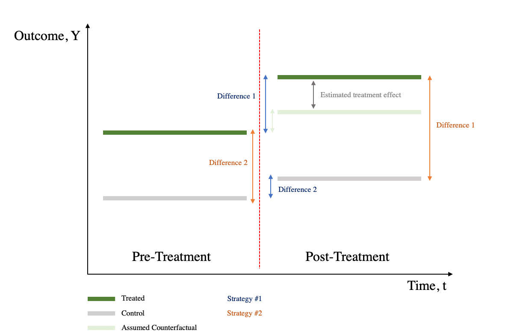

Lecture 5 Evaluation Designs
Recap lecture 4
- Stakeholders
- Identify key stakeholder
- Engaging stakeholders
- ARPR-E case
- Review of logic models and preliminary discussion of student project ideas
Today’s agenda
- Evaluation design
- RCT
- Other strategies
- Proposal
- Progress on evaluation project
Evaluation designs
- Experimental
- Randomised controled trial
- Quasi-experimental
- Regression discontinuity
- Difference in differences
- Observational (Non-experimental)
- Time–series analysis (Pre- and post-intervention studies)
- Cross-sectional surveys
- Case studies
Counterfactural: What if?
What would have happened in the absence of the program?
How do we measure what would have happened if the other circumstance had prevailed?
Comparison group
A valid comparison group:
- has the same characteristics, on average, as the treatment group in the absence of the program;
- remains unaffected by the program; and
- would react to the program in the same way as the treatment group, if given the program.
Note: Individual level effect is impossible to observe. No individual counterfactuals.
Naive design
- Naturally occurring treated and untreated groups
- Examples
- Students who participated pre-K (test scores)
- Moms who use anesthetic (hospital stays)
- Questions to ask: Do we expect that if the program had not been offered, the outcomes of the treated and untreated comparison groups would have been roughly the same?
Challenges
- Self-selection
- Selection bias
The power of randomized
Comparing average outcomes only works if groups that received/didn’t receive treatment look the same.
Random assignment methods
- Coins
- Dice
- Lottery
- Random numbers
Tool: Random Generator
Steps in RCTs
What can be randomized?
Different ways to randomize come from three basic elements of a program which can be randomized
Access: which people are offered access to a program
Timing: when people are offered access
Encouragement: which people are given encouragement to participate
When to use RCTs?
- Demand for treatment exceeds supply
- Treatment will be phased in over time
- Treatment has uncertainty
- Local culture open to randomization
- When people won’t know and it’s ethical
- When lotteries are going to happen anyway
When not?
- When you need immediate results
- When it’s unethical or illegal
- When it’s something that happened in the past
- When it involves universal ongoing phenomena
Abdul Latif Jameel Poverty Action Lab
Quasi experiment design
Not randomized assignments
- Regression discontinuity design (RDD)
- Difference in differences (DiD)
- Other designs
Regression discontinuity design (RDD)
Programs that have a continuous eligibility index with a clearly defined eligibility threshold (cutoff score) to determine who is eligible and who is not.
- The index must rank people or units in a continuous or “smooth” way.
- The index must have a clearly defined cutoff score.
- The cutoff must be unique to the program of interest.
- The score of a particular individual or unit cannot be manipulated.
Difference in differences (DiD)
Compares the changes in outcomes over time between a population that is enrolled in a program (the treatment group) and a population that is not (the comparison group).

Rule of thumb
- Correlation is the beginning of understanding what happens to a group
- Correlation does not equal causation
- Evaluation design will depends on possibility, feasibility, and appropriability
References
Gertler, Paul J., Sebastian Martinez, Patrick Premand, Laura B. Rawlings, and Christel M. J. Vermeersch. 2016. Impact Evaluation in Practice, Second Edition. Washington, DC: World Bank. https://doi.org/10.1596/978-1-4648-0779-4.